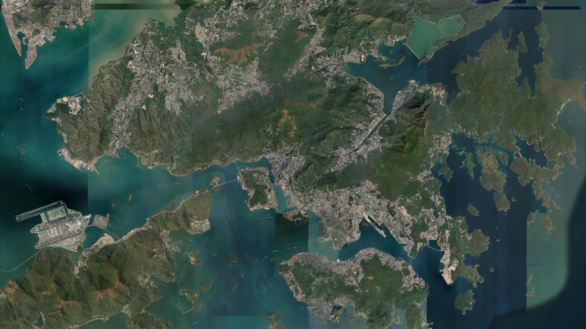
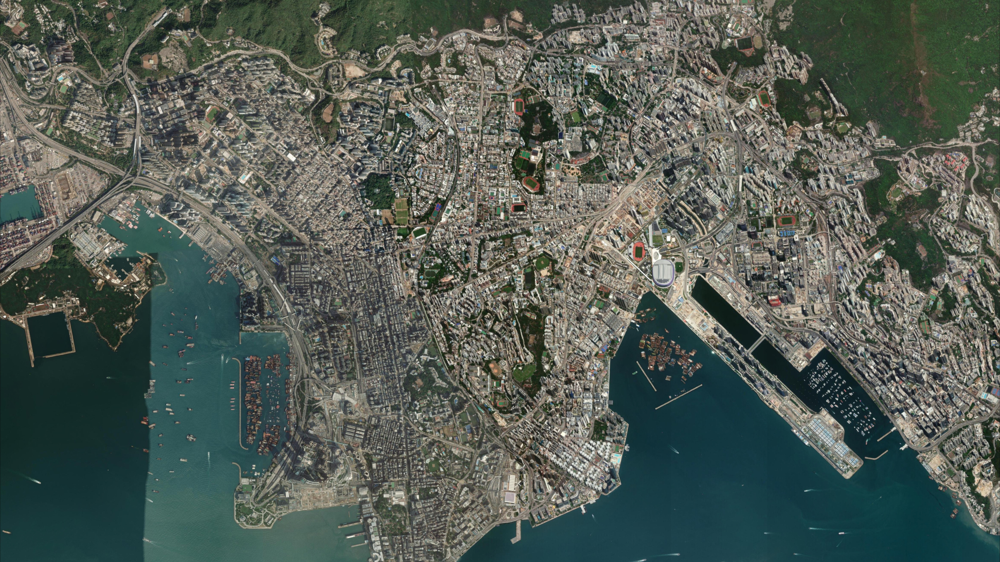
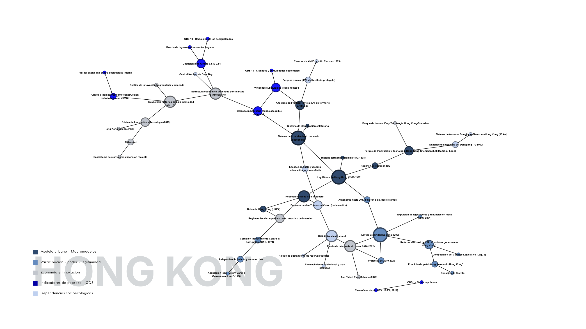

01
Capítulo I • Slides 2 a 7
Hong Kong: Relieve Confinado & Régimen Financiero
Guion Spoken • Slides 3 – 6
📍 Desembocadura del Río Perla
Hong Kong está en el extremo sur de la provincia de Guangdong, en la desembocadura del Río Perla, frente al Mar de China Meridional. Comenzó como un territorio de pequeños pueblos pesqueros y agrícolas, ubicado en una posición estratégica frente al mar. En 1842 pasó a control británico después de la Primera Guerra del Opio. Su puerto impulsó rápidamente el comercio y la conexión con otras ciudades asiáticas. Durante el siglo XX, Hong Kong se industrializó y recibió grandes cantidades de población. La falta de suelo disponible llevó a un crecimiento compacto y vertical.
Casi el 40% del territorio de Hong Kong está protegido como parques rurales — eso concentra todo el desarrollo urbano en una fracción reducida del territorio disponible, y explica la densidad. Este es el distrito central de negocios, sede de la Bolsa de Hong Kong y de buena parte del sector financiero que, junto con el comercio y la logística, sostiene la economía de la ciudad.
Casi el 40% del territorio de Hong Kong está protegido como parques rurales — eso concentra todo el desarrollo urbano en una fracción reducida del territorio disponible, y explica la densidad. Este es el distrito central de negocios, sede de la Bolsa de Hong Kong y de buena parte del sector financiero que, junto con el comercio y la logística, sostiene la economía de la ciudad.

Ubicación Estratégica
Extremo sur de Guangdong y desembocadura del Río Perla.

De Puerto a Rascacielos
Control británico post-Guerra del Opio y crecimiento vertical.

40% Parques Protegidos
Confinamiento de la huella urbana en franjas costeras.

El Corazón Financiero
Bolsa HKEX, servicios profesionales y logística global.
Guion Spoken • Slide 7
🌐 Red Sistémica de Hong Kong
«Formamos redes de las ciudades a partir de los conceptos que pensamos que son pertinentes para poder explicar las distintas dinámicas, los distintos actores y elementos que surgen en la red, siendo esta la de Hong Kong. La organizamos en cinco dimensiones: modelo urbano y macromodelos, participación y legitimidad, economía e innovación, indicadores y pobreza, y dependencias socioecológicas.»

Topología de Hong Kong en 5 Dimensiones
Interrelación de macromodelos urbanos, régimen de Common Law, ordenanza PDPO, dependencia hídrica del Dongjiang y vivienda subdividida.
🖱️ Arrastra fondo para Rotar • Arrastra Nodos elásticamente • Clic en nodo para ver dimensión
Nodo
Información.